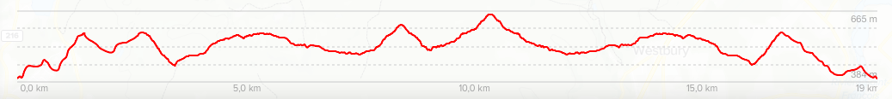
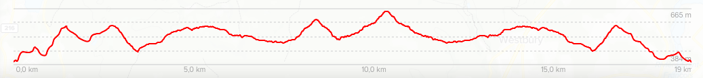
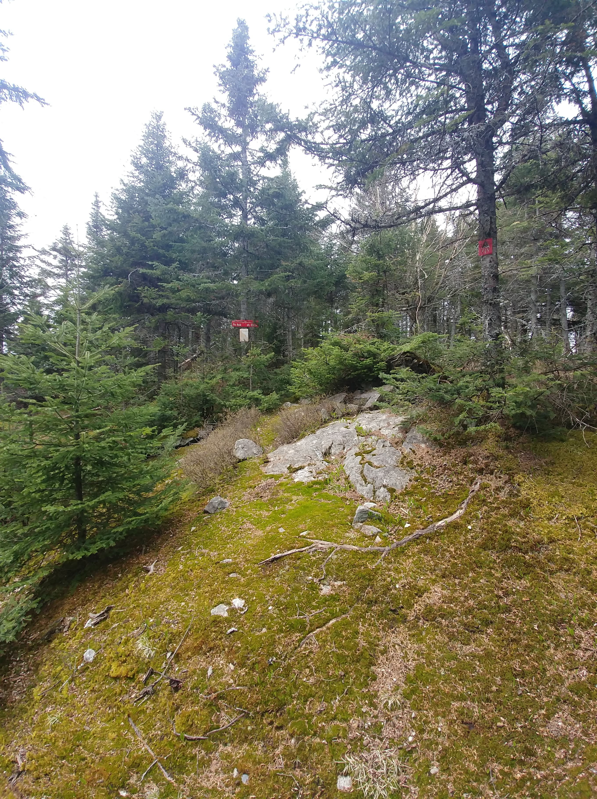

Les monts Stoke
8 mai 2021
 

- Longueur : 18,97 km
- Dénivelé positif : 890 m
- Point culminant : 653 m
- Vision au sommet : 180°
- Durée : entre 5 et 6 heures


Les monts Stoke forment une chaine de montagnes séparée du grand sentier de randonnée des Cantons-de-l'Est. La situation géographique fait en sorte que la région est peu fréquentée par les randonneurs, ce qui offre des excursions en toute tranquilité et dans une nature n'ayant pas trop de traces humaines, quasi intacte. Chose rare en Estrie.


Le réseau de sentiers pédestres des monts Stoke se divise en trois zones. La zone Chapman traverse la crête des montagnes sur une dizaine de kilomètre en procurant des points de vue et d'intérêts : grottes, falaises, marais, etc. Si vous tentez la traversée, le chemin de la crête engage sur une voie solitaire et au sein d'une forêt sauvage. La zone Stoke s'étend sur la partie sud des montagnes, et la zone East Angus permet de rallier La Vallée Heureuse du Mont-Élan tout en offrant des points de vue et un joli ruisseau.


Ma randonnée s'est faite au début du mois de mai; la période de dégel se terminant plus tôt qu'ailleurs dans cette région. Une journée nuageuse avec très peu de vents a rendu la marche un peu plus difficile que prévu à cause d'une atmosphère lourde, particulièrement dans les sous-bois denses en végétation.


La randonnée débute après une marche d'approche de quelques mètres à l'extrémité du Rang 10. Une fois sur le sentier, le ton est donné : une relief très accidenté ponctué de montées et de descentes raides. Les sommets ne sont malheureusement pas à la hauteur des efforts engagés dans l'ascension, car il n'y a que peu sinon aucun points de vue.
